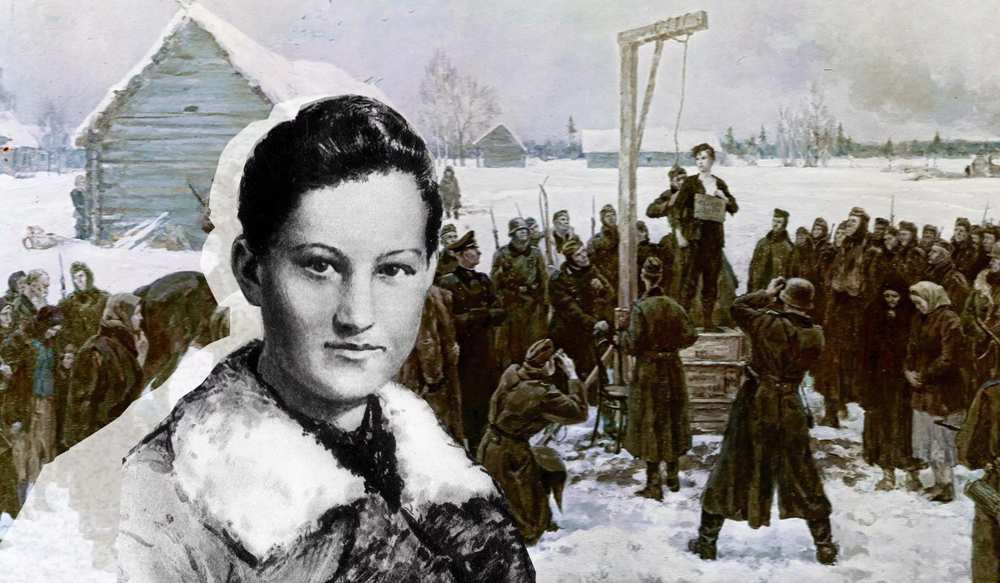

В 1962 году было принято решение считать каждое второе воскресенье сентября Международным днём памяти жертв фашизма, основной целью которого является борьба с идеологией возрождения фашизма. В 2023 году рядом с этой датой стоит вторая: 100 лет назад, 13 сентября 1923 г., в селе Осино-Гай Тамбовской губернии родилась Зоя Космодемьянская, которой суждено было стать разведчицей, партизанкой, Героем Советского Союза. Фашисты замучили девушку, имя которой сегодня и всегда прославляет стойкость, героизм и бесстрашие советского народа.